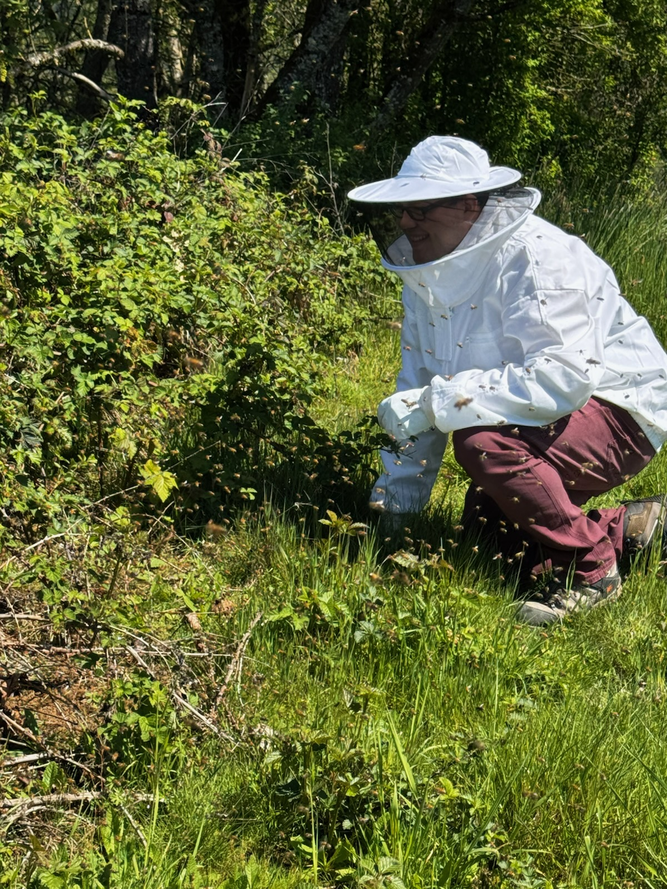
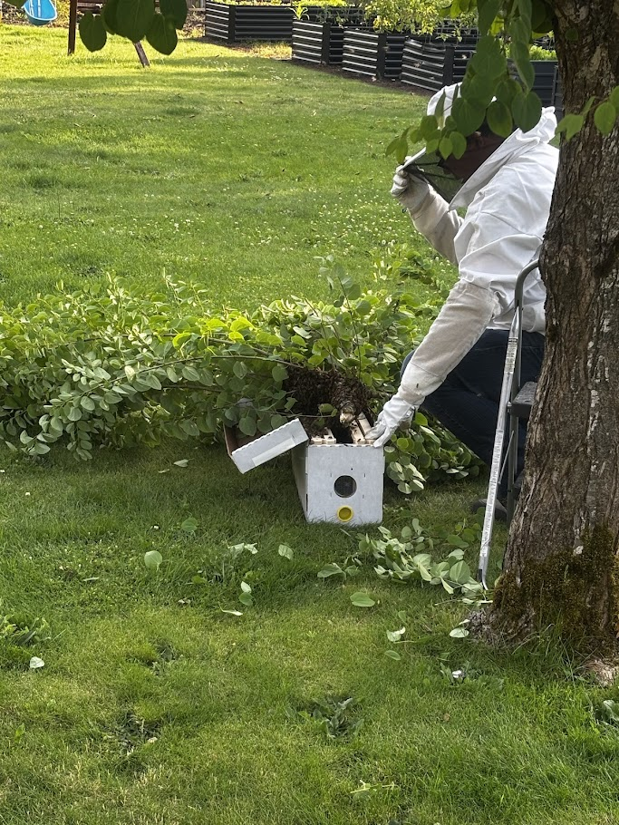

Springfield/Eugene, Oregon
HoneyTide Apiary Is Growing One Colony at a Time
Nature's Rhythm. A Bee's Blessing.
Owned and operated by Camron Purdum, HoneyTide Apiary is a small growing apiary built around responsible beekeeping, pollinator stewardship, and the colonies whose stories you’ll find here.
As the bees grow stronger, we're working toward future small-batch local honey, beeswax, and other hive products shared only when the colonies have surplus to spare.
A place for
bee people.

Founder & Head Beekeeper
The Beekeeper Behind HoneyTide
Hi everyone! My name is Camron Purdum Founder and Head Beekeeper of HoneyTide Apiary located in the Springfield/Eugene area. I am building the apiary from the ground up through hands-on colony care, continued learning, and a steady respect for what the bees need each season.
For myself, beekeeping is both practical and personal. Every inspection, swarm recovery, and colony decision is part of learning how to manage the apiary responsibly while growing HoneyTide into a sustainable local business.
I am currently enrolled in the OSU Master Beekeeper Apprentice Program, participating in the OSU Bee Advocate Program, and a member of the Lane County and Oregon State Beekeepers Associations.
The goal is not to rush the bees. The goal is to build strong colonies
first, then share what the hive can responsibly spare.
The colony journal
Zion, Tortooga, Butera, and The Anchor Colony
These are some of the colonies that began HoneyTide’s story. Each one has shaped the early story of the apiary and continues to teach something different about timing, patience, resilience, and responsible hive management.

Zion — The Colony That Started It All
One of HoneyTide's founding nucleus colonies, Zion was strong from the start and quickly needed more space. This colony has become an early benchmark for healthy growth and confident expansion.
Tortooga — Growing at Its Own Pace
Tortooga arrived alongside Zion but has developed more slowly. This colony continues to teach patience, observation, and the importance of responding to what each hive is actually showing.
Butera — HoneyTide's First Swarm Capture
Butera began as HoneyTide's first successful swarm capture. Named after the family whose property hosted the swarm, this colony represents an early opportunity to preserve a colony and give it a managed home.
The Anchor Colony — A Rescue from an Unusual Home
The Anchor Colony was recovered from an unusual mailbox-anchor cavity. Their rescue is a reminder of how resilient honey bees can be and why careful relocation matters when bees settle into spaces shared with people.
Growing Toward Hive Products
Small-Batch Honey, Beeswax, and Hive Goods — When the Bees Are Ready
HoneyTide is being developed into a sustainable apiary that will eventually offer hive products when the colonies are healthy and strong enough to share surplus responsibly.
🍯 Small-Batch Local Honey
Seasonal honey harvested in small batches only when colony health, hive stores, and local conditions allow.
🕯️ Beeswax Products
Future beeswax goods made from responsibly collected wax as the apiary matures and the bees can spare it.
🌿 Other Hive Goods
Additional hive-based products may be explored over time, always guided by the season, the health of the colonies, and responsible apiary management.
Hive products are not currently available for regular sale. Updates will be shared as the apiary grows.
Responsible Beekeeping
Built on Stewardship, Learning, and Care
HoneyTide is growing with a simple priority: strong bees first. Camron's approach is rooted in observation, responsible hive management, and respect for both honey bees and the larger pollinator community around them.
🐝 Colony Health First
Hive products only make sense when the bees have enough for themselves. Colony strength, food stores, and seasonal timing come before harvest goals.
🌿 Observation-Based Management
Each colony has its own rhythm. Camron manages the apiary by watching what the bees are showing and responding with patience instead of forcing growth.
🍯 Pollinator Stewardship
HoneyTide works with honey bees, but the broader goal includes pollinator awareness, native bee habitat, flowering plants, and healthier local landscapes.
Education, Swarms, and Community
Beyond the Hive
HoneyTide is also growing as a place for pollinator learning, beginner-friendly beekeeping education, swarm awareness, and community connection in Lane County.
As HoneyTide grows, Camron hopes to share practical information about honey bees, native pollinators, swarm awareness, and ways people can support pollinator-friendly spaces at home.
When available, Camron may also assist with easy-access honey bee swarms in the Springfield/Eugene area. Structural removals involving walls, roofs, chimneys, buildings, or major property structures are not currently offered.
The Future of HoneyTide
A Local Apiary Growing with the Seasons
HoneyTide is being built slowly and intentionally: stronger colonies first, future hive products when the bees can share, and more opportunities for local education and pollinator connection as the apiary matures.
The long-term goal is a sustainable Lane County-area apiary known for responsible beekeeping, small-batch hive products, and a grounded connection between people, pollinators, and the land around them.